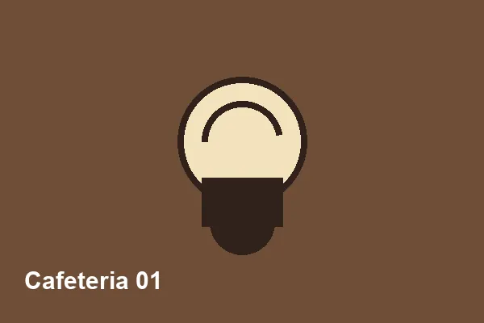

GUIA LOCAL DE CAFÉ
Encontre seu próximo café em São Paulo.
Explore ambientes especiais, métodos de preparo e cafeterias independentes por toda a cidade.
Explorar cafeterias
PENSE LOCAL
Cafeterias em destaque
Carregando destaques...
GUIA LOCAL DE CAFÉ
Explore ambientes especiais, métodos de preparo e cafeterias independentes por toda a cidade.
Explorar cafeterias
PENSE LOCAL
Carregando destaques...